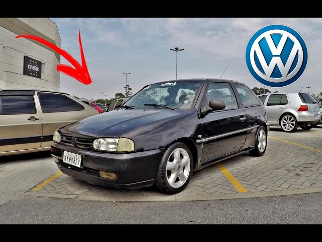

safety car
gol tsi

1996 a Volkswagen lançou o sucessor do GTS, o Gol TSi. Hoje a sigla é ligada aos motores turbo
(que o Gol quase teve, mas essa história fica para depois), mas na época ela foi a opção da
Volkswagen para o Gol esportivo com motor 1.8 injetado.
acesse para saber mais